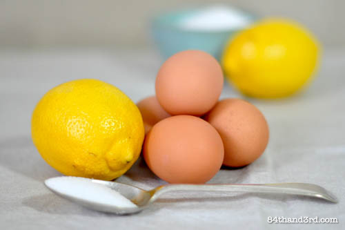

Lemon-Egg Shampoo

The ideal way to wash your hair.
Why you should wash your hair this way.
Ingredients
- 2 Eggs
- The Juice of 1 Lemon
- (Optional) Fragrance of Your Choosing
- (Optional) Unrefined Coconut Oil
Method
- Whisk together lemon juice, eggs, and optionally a fragrance of your choosing.
- Strain the mixture and transfer it to a pouring vessel.
- Wet your hair as normal, then apply evenly across your scalp a little less than half of the mixture (note: DO NOT wash your hair in hot water--the eggs WILL cook).
- Scrub like there's no tomorrow, then thoroughly rinse out. I recommend using some kind of scalp scrubber.
- Repeat step 3 & 4 with the remaining half of the mixture.
- (Optional) Once hair is dry enough to no longer be dripping, work some coconut oil in with a boar's hair bristle brush, focusing on your ends.
- (Optional) If you've curly hair, try doing some shower belt curls. They work very well for wavy/moderately curly hair, and each morning to get the back, all you have to do is brush your hair out and coil sections around your finger. It'll look like you took tens of minutes styling, when in fact it only took you two.